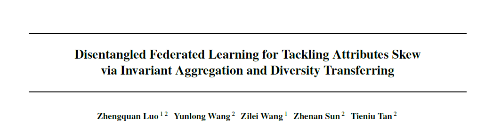
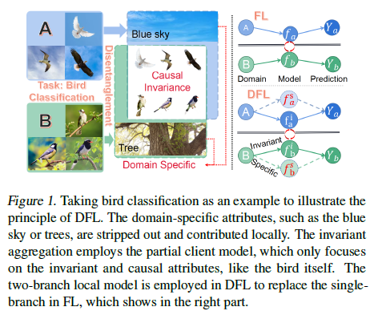
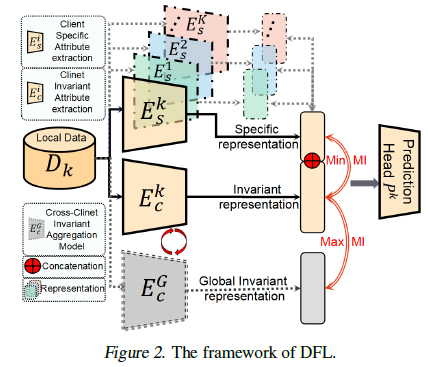

作者信息：
骆正权（中国科学技术大学，中科院自动化所），王云龙（中科院自动化所），王子磊（中国科学技术大学），孙哲南（中科院自动化所），谭铁牛（中科院自动化所）
收录会议：
39th International Conference on Machine Learning（ICML2022, to appear）
文章概要：
本文针对目前制约联邦学习发展的节点数据非独立同分布问题中较为复杂的属性倾斜因素，提出了共识表征提取和多样性传播的解构联邦学习框架（Disentangled Federated Learning，DFL）。
会议网址：
https://icml.cc/Conferences/2022
人工智能前沿讲习公众号：【源头活水】ICML 2022 | 共识表征提取和多样性传播的解构联邦学习框架
  